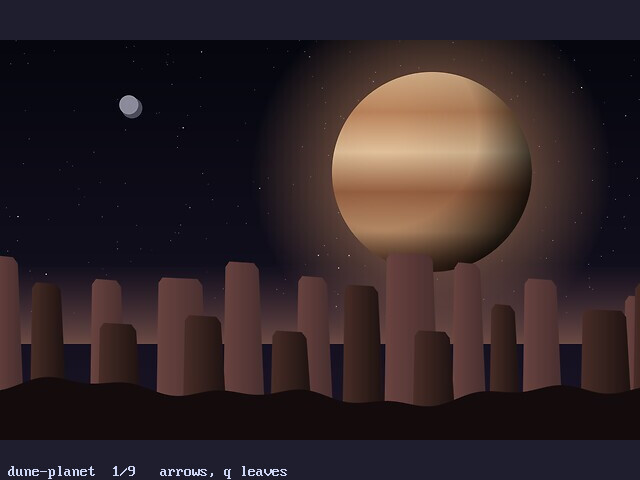
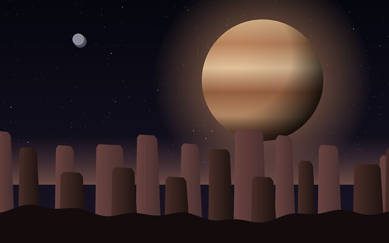
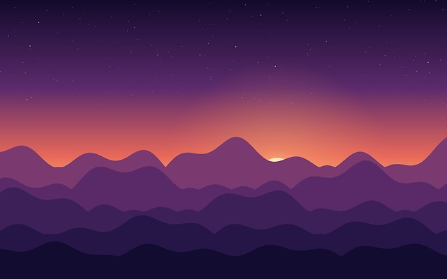
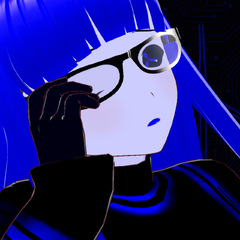
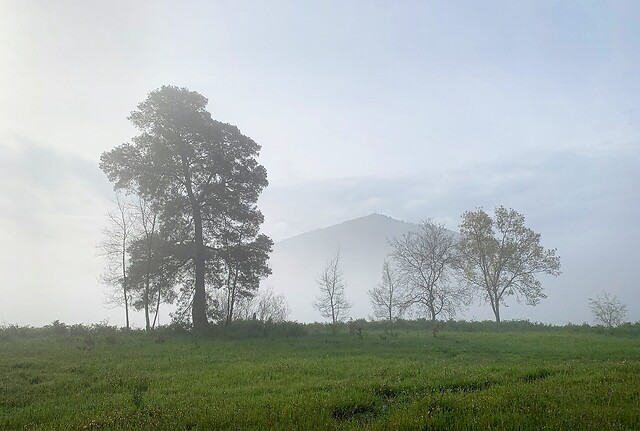
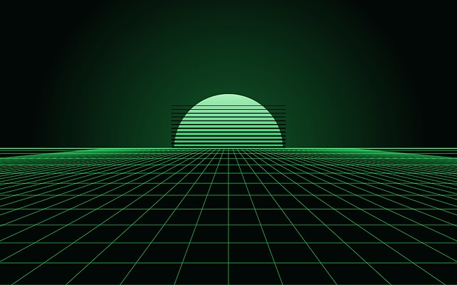
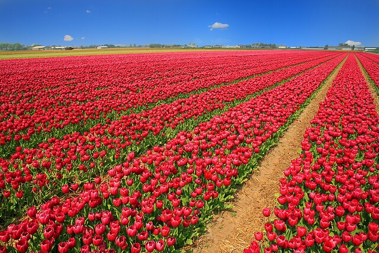

subverge
subvergePictures
- The gallery
- Bitmaps
- Drawing
- The built-in pictures
- All the pictures
- dune-planet
- dusk-ridge
- fjord-mist
- golden-coast
- gretagen
- misty-meadow
- mountain-lake
- phosphor-horizon
- texivi
- tulip-rows
- vsauce
- Adding a picture
Subverge can draw full-colour pictures on the graphics screen. There are two parts: bitmaps, which are pixel grids that a program fills in and draws, and the pictures built into the system, which decode into bitmaps. gallery shows the built-in pictures, and credits shows three of them next to the credits.
All of it needs graphics mode, which needs QEMU's default -vga std display. See screen.
The gallery
gallery
draws the pictures one at a time, each at its own size on the 640 by 480 screen. The first are photographs and drawings, and the ones after them are screenshots of Subverge, each 640 by 480. The right and down arrows, Space and n go to the next one, the left and up arrows and p to the one before, and q, Esc or Ctrl-C leave. The name and the position are printed at the bottom. Decoding takes a moment, so a picture appears shortly after the key. pictures lists the names:
pictures
Every picture is a JPEG that was scaled to fit in 640 by 480 when the system was built, and the kernel decodes it with its own decoder. Colours are kept as 24-bit values, so a photograph is shown as it is and is not reduced to a palette.


Bitmaps
A bitmap is a width, a height and one colour per pixel, kept by the kernel and named by a number from 0 to 15. A colour is one number, 0xRRGGBB, with each part from 0 to 255. pack-rgb builds one from its parts.
| Word | Effect |
|---|---|
bitmap |
w h -- id, a new black bitmap |
bmp-set |
id x y rgb --, sets a pixel |
bmp-get |
id x y -- rgb, reads a pixel |
bmp-fill |
id rgb --, fills the whole bitmap |
bmp-box |
id x y w h rgb --, fills a rectangle |
bmp-size |
id -- w h |
bmp-show |
id x y --, draws the bitmap with its top-left corner at x, y |
bmp-free |
id --, gives the bitmap back |
pack-rgb |
r g b -- n |
picture |
name -- id, decodes a built-in picture into a new bitmap |
pictures |
-- list, the names of the built-in pictures |
A bitmap is at most 2048 by 2048. There is room for 16 bitmaps at a time, shared by all four tabs, and a bitmap stays until bmp-free is run on it. Pixels outside a bitmap are ignored by bmp-set and read as 0 by bmp-get. bmp-show cuts off whatever falls outside the screen, and fails with graphics mode is off, run gfx first when gfx isn't running.
Drawing
gfx
200 100 bitmap { b }
b 0x102030 bmp-fill
b 10 10 180 80 0xFFC040 bmp-box
b 50 50 100 pack-rgb ->c
b 100 50 c bmp-set
b 20 20 bmp-show
key drop gfx-off
Locals such as b last for one line, so a longer program is a word, and a bitmap number can be kept in a definition. A bitmap is drawn in one step, so changing it and drawing it again with bmp-show is the way to animate:
[ gfx 64 64 bitmap { b }
0 64 [ { y } 0 64 [ { x } b x y x 4 * y 4 * 128 pack-rgb bmp-set ] for ] for
b 288 208 bmp-show
key drop b bmp-free gfx-off
] :gradient
The built-in pictures
picture takes one of the names from pictures.
The photographs and the people who made them are in credits. The three drawn ones were made with a small generator and are not photographs.
gfx "tulip-rows" picture { b } b 0 106 bmp-show key drop b bmp-free gfx-off
Decoding allocates the bitmap, and its memory comes back with bmp-free. A picture that is not baseline JPEG is refused with that picture could not be read, which only matters for pictures added to the source tree in art/.
All the pictures
Every built-in picture, as gallery shows it:
dune-planet

dusk-ridge

fjord-mist
golden-coast
gretagen

misty-meadow

mountain-lake
phosphor-horizon

texivi
tulip-rows

vsauce
Adding a picture
Put a baseline JPEG in art/ in the source tree, no larger than 2048 by 2048, and rebuild. The file name without .jpg is the name for picture. A 4:2:0 or 4:4:4 JPEG without progressive coding works, and ImageMagick makes one with -interlace none. Every picture adds its size to the kernel, and an installed disk keeps the kernel in 2 MiB, so a few hundred kilobytes each is the budget.
See screen for the other graphics words, apps for the programs and errors if a line fails.